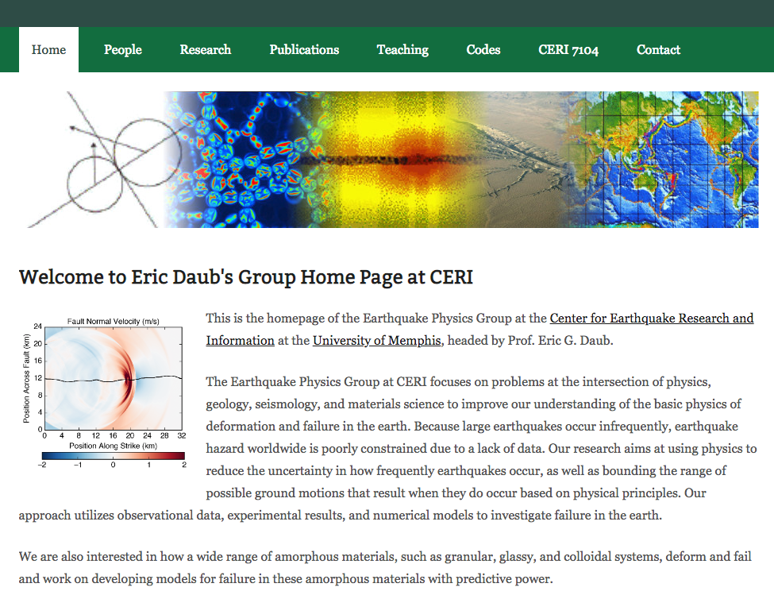
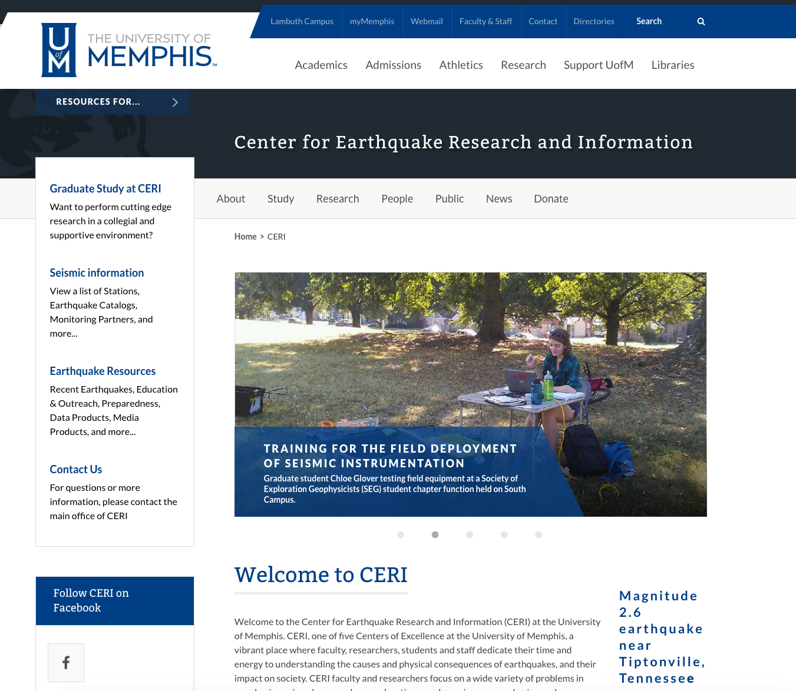

List of Selected Journal Publications
1. Lin, T., Aslam, K., S., Thomas, A., Melger, D., " Overlapping regions of fast slip and slow slip" 2020, Earth and Planteray Sciences. EPSL, Pdf
2. Liu, C., Aslam, K., S., Daub, E., G., "Seasonal variation of seismic velocity from ambient noise analysis" 2020, Journal of Geophysical Research. JGR, Pdf
3. Aslam, Khurram S., and Eric G. Daub, (2018) Effect of fault roughness on aftershock distribution: Elastic off‐fault material properties. Journal of Geophysical Research: Solid Earth (2018). Pdf, JGR
4. Aslam, Khurram S., and Eric G. Daub, (2019) Effect of fault roughness on aftershock distribution: Plastic off‐fault material properties. Journal of Geophysical Research: Solid Earth. Pdf JGR
5. Liu, C., Aslam, K., S., Langston, C., "Directionality of Ambient noise sources for the Missisipi Embayment region." 2020, Geophysical Journal International. GJI, Pdf
6. Harris, Ruth A., et al. "A suite of exercises for verifying dynamic earthquake rupture codes." Seismological Research Letters 89.3 (2018): 1146-1162. SRL, Pdf
7. Saxena, A., Aslam, K., S., Powell, C., Choi, E., " Stress concentration in the Central and Southeastern US seismic zones due to upper mantle heterogeneities" 2020, Geophysical Journal International (In review). GJI, Pdf
9. Aslam, Khurram S., Taborda, R., "Ground motion simulations of Christchurch area, New Zealand incorporating surface topography and Subsurface geological structure." Journal of Geophysical Research: Solid Earth (2020, in preparation). pdf
10. Aslam, Khurram S., Daub, E. and Eunseo Choi. "Modeling the damage evolution of the near-fault zone as a result of rupture on the complex fault." Journal of Geophysical Research: Solid Earth (2020, in preparation). Pdf_Report_SCEC
List of Selected Conference Presentations
American Geophysical Union (AGU)1. Aslam, K., and Daub, E. G. (2017, 12), Effect of fault roughness on aftershock distribution and post co-seismic strain accumulation. 2017 AGU Fall Meeting Abstracts. abstract, pdf
2. Aslam, K., et al. (2017, 12), Tectonostratigraphy of the Passive Continental Margin Offshore Indus Pakistan. 2017 AGU Fall Meeting Abstracts.
3. Aslam, K., Daub E. G., and E. Choi, (2018, 12), Coupling long-term and short-term physics of an earthquake on complex fault. 2018 AGU Fall Meeting Abstracts.
4. Yousaf, W., and Aslam, K., (2018, 12), Identification of Faults and Cracks in Ornamental Stone of Dolarite rocks in Mansehra Granite region using ground penetrating radar (GPR). 2018 AGU Fall Meeting Abstracts, Washington.
Southern California earthquake center(SCEC)5. Aslam, K., and Daub, E. G. (2018, 08). Modeling damage evolution in the near-fault region as a result of rupture on complex fault. Poster Presentation at 2018 SCEC Annual Meeting. abstract, pdf
6. Aslam, K., and Daub, E. G. (2017, 08). Modelling the spatio-temporal pattern of heterogeneous stresses and strain accumulation due to earthquake rupture on a geometrically complex fault. Poster Presentation at 2017 SCEC Annual Meeting. abstract, pdf
Quake-Core conference Newzealand
7. Aslam, K., and Taborda, R.(2017, 08). 3D Ground Motion Simulations for the Christchurch Area Including the Surface Topography Effects, Poster Presentation at 2017 Quake-core Annual Meeting. abstract, pdf
Seismological society of America8. Liu, C., Aslam, K., and Daub, E., (2019, 04). Estimating Seasonal Seismic Velocity Variation in the Mississippi Embayment From Ambient Noise Cross-Correlation Analysis. 2019 SSA Meeting Abstracts.
9. Aslam, K., Liu, C., and Langston, C., (2019, 04). Directionality of Ambient Noise in the Mississippi Embayment: Ocean and Local Source Locations. 2019 SSA Meeting Abstracts.
10. Aslam, K., and Daub, E. (2015, 09). Modelling coupled interaction of creeping and locked faults. 2015 ES-SSA Meeting Abstracts.
List of Funded projects
1. Effect of fault roughness and associated inelastic deformation on postseismic and interseismic strain (PI: Eric Daub). pdf
2. The influence of rheology on post-seismic and interseismic deformation on rough faults (PI: Eric Daub). pdf
Useful links
 
News
The link provides my interview on the graduation day from ICTP, Italy. Khurram interview by ICTP
The link provides Khurram Aslam's resume. Resume
Link to my LinkdIn Khurram LinkdIn